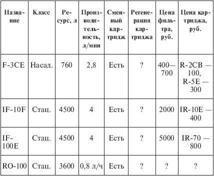
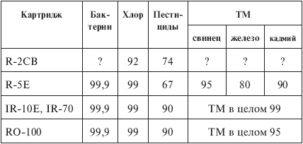

Бытовые фильтры. для очистки воды «Instapure» .

Гамму фильтров «Instapure» («мгновенно чистая») производит компания «Teledyne Water Pik» (США), работающая в области водоочистки примерно четверть века. Ее фильтры поставляются в 50 стран мира: «от Ванкувера до Сингапура и от Сиднея до Рейкьявика» – так сказано в фирменном проспекте. Россия лежит как раз между Ванкувером и Сингапуром (или, если угодно, между Сиднеем и Рейкьявиком), так что компания «Teledyne» почтила и нас своим присутствием.
Фильтры «Instapure» представлены следующими моделями (табл. 5.25 и 5.26):
– тремя типами небольших насадок-корпусов «F-3CE», «F-6E» и «F-2CE», в которые могут закладываться картриджи «R-2CB» или «R-5E»;
– двухуровневой стационарной системой очистки воды «IF-10F» – один корпус-патрон, который закрепляется под мойкой, соединяется с водопроводной трубой и имеет кран для питьевой воды. Первая стадия очистки – механическая, с удалением ржавчины, песка, ила и других частиц размером до 5 мкм. Вторая стадия снижает содержание пестицидов, хлора и хлорорганических соединений за счет использования традиционного сорбента – активированного угля;
– трехуровневой стационарной системой очистки воды «IF-100E», состоящей из двух патронов, которые также закрепляются под мойкой и соединяются с водопроводной трубой. В первом патроне выполняются первая и вторая стадии очистки (аналогично фильтру «IF-10F»), во втором – третья, в ходе которой удаляются до 99 % ионов тяжелых металлов и до 99,9 % микроорганизмов за счет использования ионообменного материала;
– трехуровневой стационарной системой очистки воды «RO-100». Первая стадия очистки – механический фильтр, вторая – целлюлозная триацетатная мембрана (фильтр обратного осмоса), третья – сорбционный картридж на основе активированного угля.
Таблица 5.25. Фильтры «Instapure»

Примечания.
1. Скорее всего, картриджи не подлежат регенерации – их просто заменяют.
2. Для трехуровневой системы с обратным осмосом «RO-100» срок службы картриджа первичной очистки – 2–3 года, мембраны – 18 мес., картриджа на основе активированного угля – 6 мес.; если считать ресурс по угольному картриджу, то он составит 3600 л.
3. Стоимость фильтра обратного осмоса может составлять 15 000—20 000 руб.
Таблица 5.26. Эффективность очистки воды, %[20]
